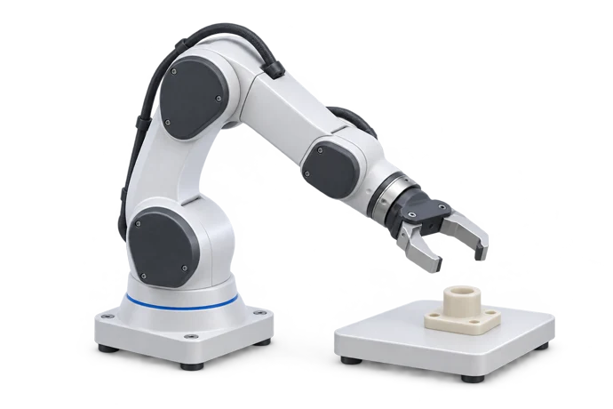
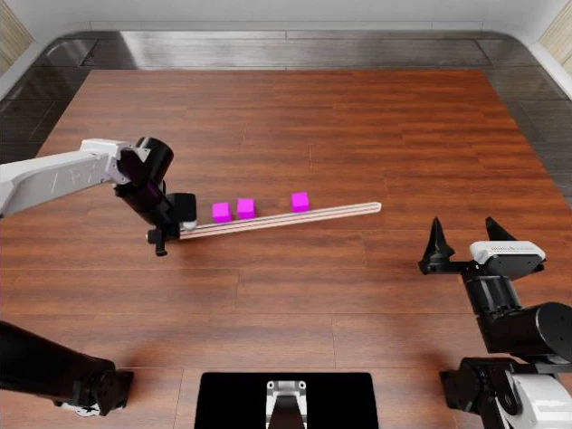

Block alignment with direct control
Task succeededThe model chose each action batch from the current observation and trajectory history. The benchmark reported a score of 100 at step 135.
Open alignment videoOpen platform for robot recursive self-improvement
Robot learning, run by run.
Deploy robot agents, learn from what happens, and measure what improves on the next run. RoboUse-RSI gives researchers shared interfaces for building and comparing methods.

Each run produces observations, actions, and a benchmark outcome. Researchers can distill what worked into reusable skills or lessons, then test whether that experience improves a later run.
Run a robot agent in a benchmark environment.
Capture decisions, actions, and execution feedback.
Extract reusable skills and lessons from the run.
Test what transfers to a later run and compare outcomes.
A method combines five responsibilities. Shared services handle models, robot capabilities, and experiment recording across those combinations. Agents can generate actions directly, execute model-written code, or delegate a subtask to a policy.
While a robot is running, the agent can use recent observations and action feedback as context. Across attempts, an exploration workflow can distill lessons or skills, freeze them, and pass them into later runs for evaluation. The recorded context and benchmark outcomes help researchers compare methods under the same task, model, and budget.
These eight reference implementations are a starting set for direct control, policy supervision, and learning from experience. More methods can be added through the same interfaces and evaluated with the same benchmark adapters.
Adapters translate native observations and controls into a common runtime interface and preserve each benchmark’s task verdict.
Method and checkpoint compatibility depends on the environment and its action space. Read the adapter guide.
Two RoboDojo runs show how action decisions and interventions are recorded. Each clip displays the left wrist, head, and right wrist cameras.

Head camera · Step 81RoboDojo simulation
At step 81, the robot uses a ruler to push three blocks into alignment.
The model chose each action batch from the current observation and trajectory history. The benchmark reported a score of 100 at step 135.
Open alignment videoA supervisor reviewed Pi0.5’s action windows and attempted two local repairs. The second repair executed, and the benchmark ended at the 200-step limit with a score of 0.
Open supervision videoThese runs used different tasks and execution modes. Read the trajectory report.
With Python 3.10 or newer and access to the implementation repository, install the framework and preview a reference method without starting a simulator or model.
git clone https://github.com/MichaelGaoZT/OpenRSI.git
cd OpenRSI
python3 -m venv .venv
source .venv/bin/activate
python -m pip install -e '.[runtime]'
python -m openrsi methods list
python -m openrsi methods run robo_icl --dry-runTo run a full experiment, prepare the simulator, task assets, and model services described in the environment guide. Open the experiment viewer to review decisions, tool calls, execution feedback, and native task results.